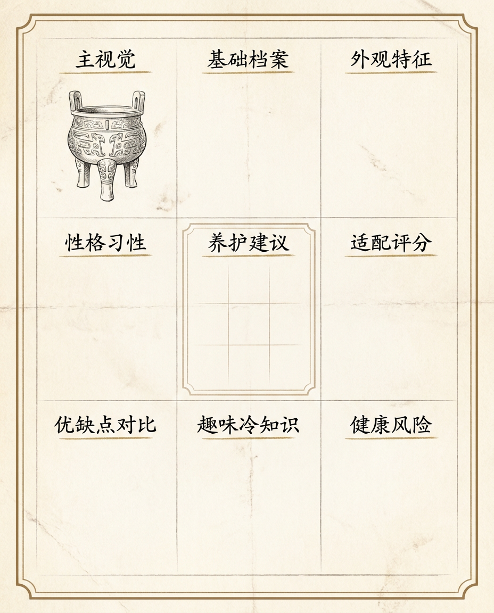
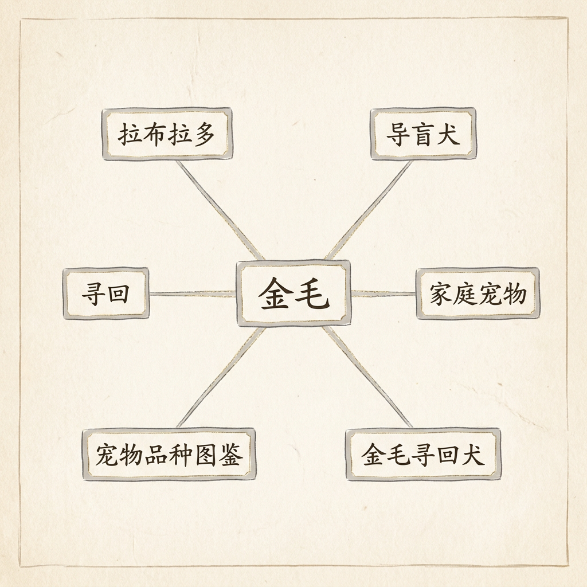

60 张图鉴, 9 个字段
2026 年 6 月, 我做完了图鉴社 Atlas Kit 的第 60 张图鉴。第一张是金毛, 最后一张是三星堆。
做这个项目之前, 我对「图鉴」的理解很窄——小时候翻过《动物图鉴》《矿石收藏》, 那种带手绘插图、有固定版式、每页讲透一个物种的小册子。后来长大, 这种东西基本消失了。网上要么是百科词条 (字多图乱), 要么是小红书帖子 (图好看但没法系列化)。
我想把「图鉴」这件事重新做一遍, 但不想做老式的纸面 PDF。
想做网站, 因为可以持续更新、可以加交互、可以让我自己随时翻。
下面是这个项目的一些想法, 也算一个小型复盘。
起点其实是个 bug
最早我想用 AI 生图工具做一套宠物品种图鉴, 跑了几张之后发现, 每次生成的图版式都不太一样——
金毛这张是横构图, 柯基那张变竖构图, 柴犬那张又把主角放右下角。我想做的是「同一系列的视觉一致」, 这样几张图鉴并排放, 看起来是一套东西。但 AI 工具默认每张图都是独立艺术品, 没人帮你锁定版式。
这事困扰我大概一周。最后的解法不是 prompt 写得多好, 而是我不再依赖 prompt——我把版式完全锁死成 9 个固定字段, 用一个 JSON schema 描述每张图鉴的内容, 然后让 AI 填字段。这样图本身还是 AI 画, 但版式是 9 宫格模板程序化生成。

绕过去了。图鉴社就是这套程序化模板 + 60 张已填好的图鉴。
9 个字段, 看起来很土, 但解决了核心问题
那 9 个字段是: 主视觉 / 基础档案 / 外观特征 / 性格习性 / 养护建议 / 适配评分 / 优缺点对比 / 趣味冷知识 / 健康风险。
我承认, 这套字段不是创新。宠物杂志十几年前就这么排。但放在 AI 时代, 它有个新价值:让 AI 在受限空间内创作, 不会发散。
比如"适配评分", 字段就是一个 0-10 的数字 + 一句话解释。AI 不需要回答"这只狗适不适合你", 只需要给个分数和一句人话。范围窄, 错误空间也窄。
| 系列 | 卡片 | 适配评分 |
|---|---|---|
| 宠物品种图鉴 | 金毛寻回犬 | 8 |
| 宠物品种图鉴 | 拉布拉多 | 9 |
| 城市百科图鉴 | 北京 (故宫) | — |
| 图鉴杂俎 | 三星堆 | — |
金毛那张, 适配评分我给 8 分, 解释是"对新手友好但掉毛量惊人"。
三星堆那张, 这个字段我直接删了——青铜面具没有"适不适合养"这件事。
字段会随主题消失, 这不是 bug, 是设计。
字段随主题消失, 这不是 bug, 是设计。
不做 RPG 那套
我做这个项目之前, 看了几款同类工具, 大多带"稀有度 / 星级 / SSR / 抽卡"那一套。我不想做。
一个图鉴如果写"三星堆 — 史诗级文物", 那它就不是图鉴, 是抽卡结果。
我整套设计里, 没有任何"评级"。"适配评分"那个 0-10 数字是给宠物和家庭匹配用的, 不是稀有度。也没有"收集进度""解锁成就"——你打开图鉴社看到的就是 60 张平铺的卡片, 每张自带全部信息, 不藏着掖着。
可能这套定位会让"留存"变差。无所谓。这本来就不是商业项目。
一些不容易被发现的小细节
做的时候踩了几个坑, 顺手记一下:
1. 反向引用比正向引用重要。
图鉴之间的关联, 一开始我只做了"金毛 → 拉布拉多"这种同类推荐。后来发现更值钱的关联是"拉布拉多 ← 哪些图鉴提到了拉布拉多"——比如有一张金毛图鉴里讲"和金毛很像但更适合小户型", 这条就把两张卡串起来了。

技术实现其实更朴素——每次请求时扫描所有 60 张卡片的 description / tagline / subtitle, 看有没有别的卡片的 title 出现。60 张 × 几百字段, 完全跑得动, 不需要预计算索引。
2. 中文 OCR 错字率比想象高。
AI 生图经常把中文写出乱码字, 尤其是 4 个字以上的专有名词。三星堆 经常变 三牛堆 / 三星堲。我 prompt 里强制要求"所有可见中文必须 100% 正确, 不确定就用拼音或留白"——这规则救了我大概 80% 的卡。
剩下 20% 是 hand-fix。三星堆那张我手画了文字, 因为 AI 真的不会写。
3. 地图视图是个意外收获。
12 张图鉴有地理坐标 (北京 / 西安 / 苏州 / 杭州 / 成都 / 曲阜 / 拉萨 / 敦煌 / 平遥 / 凤凰 / 洛阳 / 南京)。本来只是 detail 页一个"位置"小段, 后来我把它独立成 /map 路由, 12 个 gold pin 落在 OpenStreetMap 上。
用户可以搜城市名过滤、可以点 pin 跳详情页。这个视图我自己最爱用。
60 张不是终点
现在图鉴社有 60 张图鉴, 5 个系列, 14 个页面路由。
但我不想说"未来还会做 XXX 张", 这种话太 PPT。
实际上下一步我看三个方向, 都不一定做:
- 扩量:再加 5 张卡补一个系列 (凑齐 13 类型 × 5 = 65)
- 深做:把现在某张卡的 9 字段补到 12 字段 (比如三星堆那张值得再加 "出土分布" "文物清单")
- 改架构:把 JSON 换成 SQLite, 让用户能投稿
第三个最难也最值。如果哪天做了, 大概会写一篇新文章。
如果你也想自己做一份图鉴, 不一定要用 AI。Excel + 模板 + 自己画也挺好。
AI 是加速器, 不是前提。
如果想看现成的, 站点在 atlas-kit-six.vercel.app。每张卡可以打印成 PDF。
发现错误可以邮件我, 每个图鉴页底部都有入口。
或者你也可以照着 README 自己 clone 跑一遍。
— mishishi